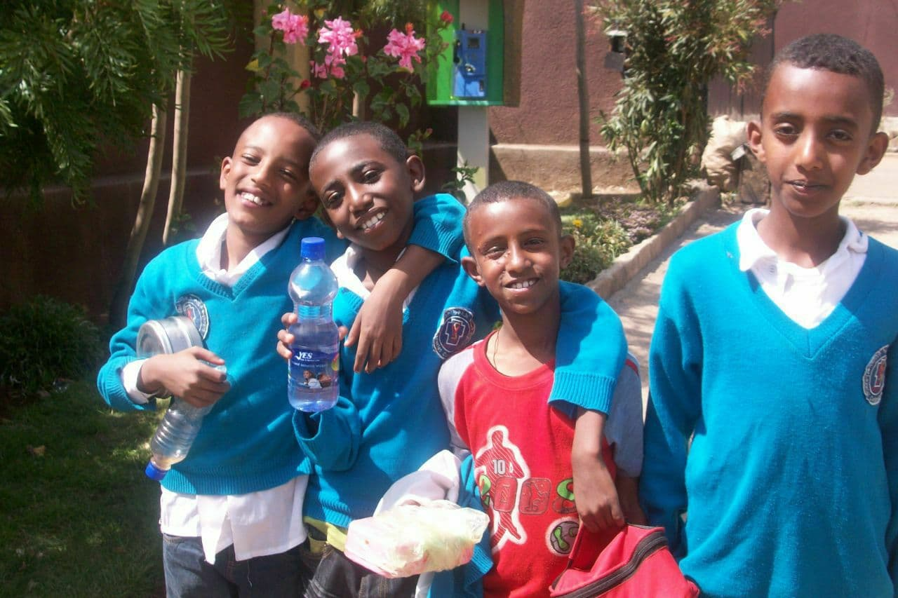

About me
I am kaleab Tekalign. I was born in the capital of Ethiopia, Addis ababa, 0n 11th february 2001 GC.. I was raised in Addis until we finally moved to Sululta. Sululta is a small town located to the north of addis ababa. It is 20 km far from addis ababa which is almost a 30 minutes journey by taxi. I learnt kindergarten in my village in the school called Bete Mariyam Youth Academy. After finishing kindergarten, I started learning at Lazarist Catholic School. Lazarist was a missionery school and male's monastry of the Ethiopian chatolic church. The directors of the school were male chatolic priests and monks. I continued learning there for 12 years until I finally graduate high school.
When I was in elementary and highschool, I was the scools top student. I was awarded many times for stood first in many grades. I scored 97.9 in the regional examination of addis ababa in grade 8, 4.00 in the national examination of ethiopia in grade 10. In 2019 I scored one of the highest scores in university Entrance examination of ethiopia. Then I joined addis ababa university, which was my first choice of preference. After learning freshman courses of a year and completing pre-engineering I joined in the software department.I am now 3rd year software engineering student at addis ababa university.